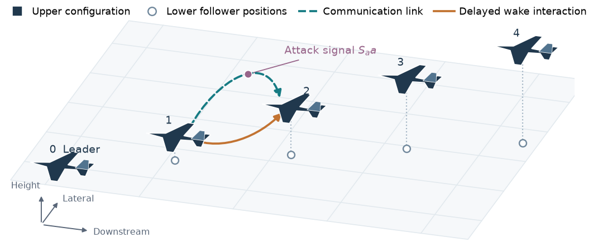
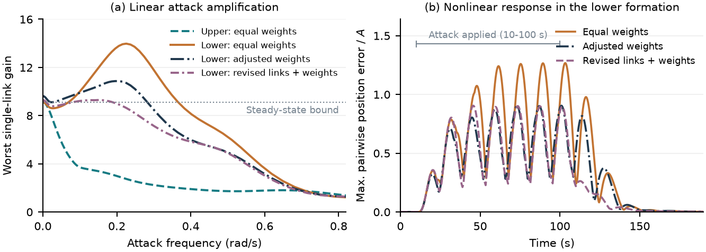
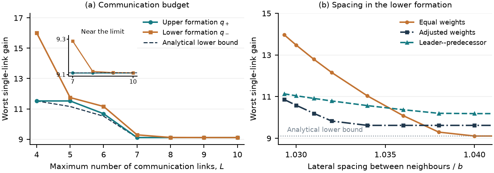

A structural lower bound
A steady-state limit on single-link attack amplification across geometries sharing the same physical graph, under the paper's response assumptions.
Department of Civil Engineering · McGill University
Conference manuscript prepared for ECC 2027 · November 2026 draft
Aircraft share navigation data over communication links and interact physically through their wakes. If one received link is attacked, the resulting errors can propagate through both paths. We ask which links and weights make the worst attack effect as small as possible.

A steady-state limit on single-link attack amplification across geometries sharing the same physical graph, under the paper's response assumptions.
An explicit communication design and a test for attainment, with exact minimum link counts for selected physical graphs.
Delayed models and nonlinear studies show why dynamic performance must also be evaluated at the geometry flown.


The release includes 117 delayed linear systems, aircraft and wake matrices for 34 operating points, numerical search records, and nonlinear histories.
python -m pip install -r requirements.txt
python prepare_data.py
python verify_exported_models.py
python verify_budget_results.py
python reproduce_figures.pyThe scripts verify the exported models at 702 stored frequency/model combinations, check budget formulas, and regenerate Figures 4–5. Full nonlinear aerodynamic regeneration requires the original GUAM implementation and the model-generation pipeline. Details and scope are documented in the repository.